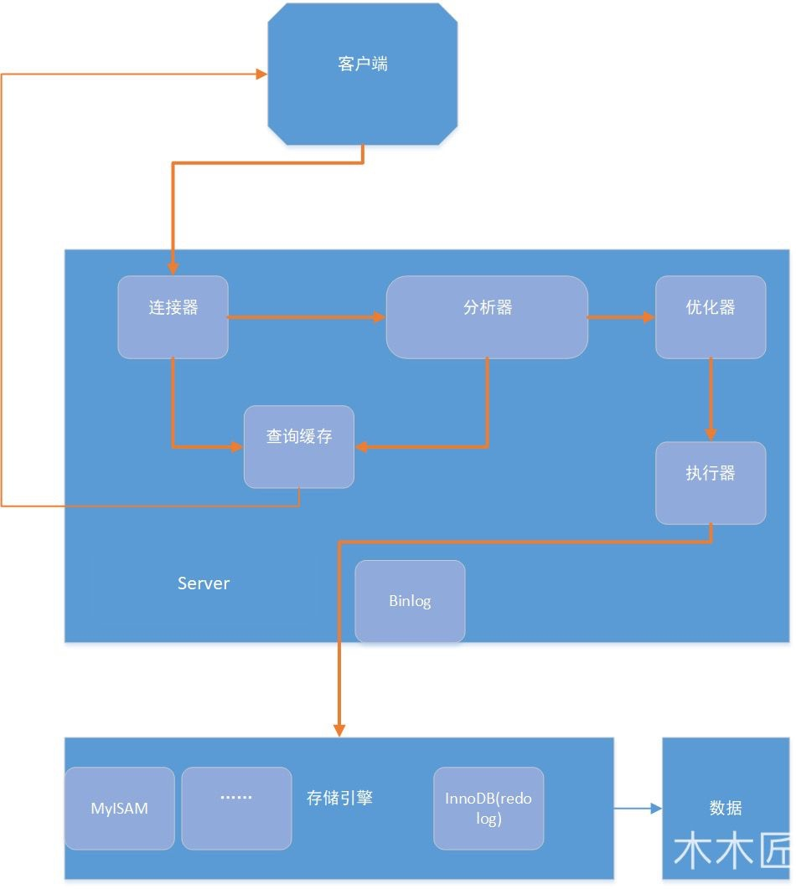
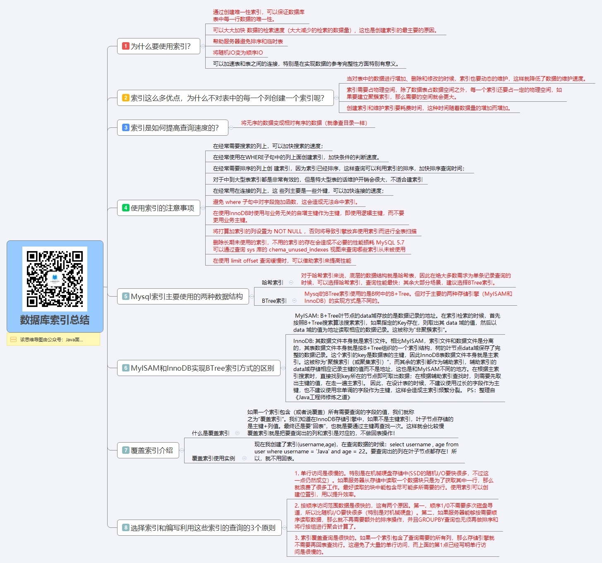
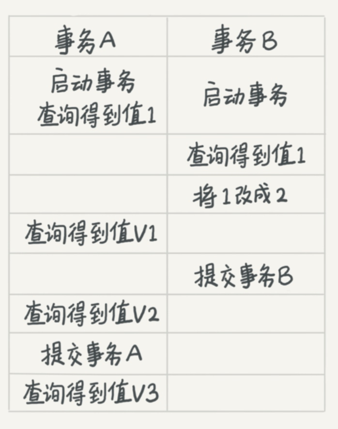
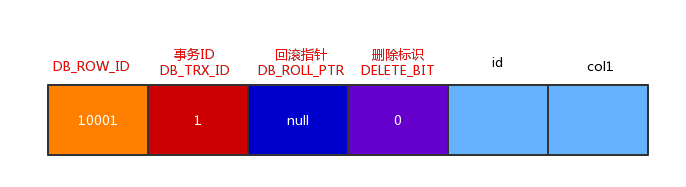

Mysql 深入
Mysql 框架

主要分为两部分：
- Server 层
- 连接器，身份认证，打开连接等操作。
- 缓存查询，基本弃用。
- 分析器，对 SQL 进行词法与语法的分析。
- 优化器，索引，多表查询等优化。
- 执行器，调用引擎接口执行。
- 存储引擎，默认使用 InnoDB。
日志
有关日志，Mysql 有两个日志：
- bin log（归档日志）Mysql 自带。
- redo log（重做日志）InnoDB 提供。
如果每一次的更新操作都要写进磁盘，写进磁盘时又要查找记录对应的位置，那么对应的 IO 成本非常高。为了解决这个问题 Mysql 使用了 WAL (Write-Ahead Logging) 技术：
即先写日志，再写磁盘。
具体来说：
- 当有一条记录需要更新时，InnoDB 就会先把记录写到 redo log，并更新内存，这样就算更新完毕了。
- InnoDB 引擎会在适当的时候将这个操作记录更新到磁盘里面。
- 如果系统突然重启，记录还在 redo log 中并不会丢失。
以具体语句说明一下执行流程：
update tb_student A set A.age='19' where A.name=' 张三 ';
- 查询到张三的记录。
- 内存中更新 age ，并记录 redo log
- redo log 进入 prepare 状态
- 执行器记录 bin log，并使得 redo log 为 commit 状态
- 完成更新操作
这里使用了两段式提交来保证数据的一致性。
索引

为什么要使用索引？
通过创建唯一性索引，可以保证数据库表中每一行数据的唯一性。
可以大大加快 数据的检索速度（大大减少的检索的数据量）, 这也是创建索引的最主要的原因。
帮助服务器避免排序和临时表
将随机IO变为顺序IO
可以加速表和表之间的连接，特别是在实现数据的参考完整性方面特别有意义。
索引这么多优点，为什么不对表中的每一个列创建一个索引呢？
当对表中的数据进行增加、删除和修改的时候，索引也要动态的维护，这样就降低了数据的维护速度。
索引需要占物理空间，除了数据表占数据空间之外，每一个索引还要占一定的物理空间，如果要建立聚簇索引，那么需要的空间就会更大。
创建索引和维护索引要耗费时间，这种时间随着数据量的增加而增加。
索引是如何提高查询速度的？
将无序的数据变成相对有序的数据（就像查目录一样）
说一下使用索引的注意事项
避免 where 子句中对字段施加函数，这会造成无法命中索引。
在使用InnoDB时使用与业务无关的自增主键作为主键，即使用逻辑主键，而不要使用业务主键。
将打算加索引的列设置为 NOT NULL ，否则将导致引擎放弃使用索引而进行全表扫描
删除长期未使用的索引，不用的索引的存在会造成不必要的性能损耗 MySQL 5.7 可以通过查询 sys 库的 schema_unused_indexes 视图来查询哪些索引从未被使用
在使用 limit offset 查询缓慢时，可以借助索引来提高性能
实现
- 哈希表，即使用拉链法维护一个哈希表来表示索引。
- 优点：
- 等值查询快，复杂度 O(1)
- 缺点：
- 不适用于区间查找，复杂度 O(N)
- 适应：
- 只适用于只有等值查询的场景。
- 优点：
- 有序数组，维护一个有序数组来维护索引。
- 优点：
- 等值查询和范围查询性能优秀，复杂度为 O(logN)
- 缺点：
- 插入和删除非常慢，复杂度为 O(N)
- 适用
- 只适用于静态存储引擎
- 优点：
- B+ 树，使用 B+ 树来维护索引。
- 优点：
- 读写上有性能优势，且适配磁盘的访问模式。
B+ 树是一般数据库的索引模式
InnoDB
在 InnoDB 中每一个索引对应一棵 B+ 树。
假设有一个建表语句：
mysql> create table T(
id int primary key,
k int not null,
name varchar(16),
index (k))engine=InnoDB;
其中 R1~R5 的 (ID,k) 值分别为 (100,1)、(200,2)、(300,3)、(500,5) 和 (600,6)，两棵树的示例示意图如下：

根据叶子节点的内容可以看出索引分为两类：
- 主键索引(clustered index)，也叫聚簇索引。
- 如果执行
select * from T where ID=500即主键查询方式。 - 只需要搜索 ID 这棵 B+ 树。
- 如果执行
- 非主键索引(secondary index)，也叫二级索引。
- 如果执行
select * from T where k=5，即普通索引查询方式。 - 需要先搜索 k 索引 树，得到 ID 的值为 500，再到 ID 索引树搜索一次。
- 上面这个过程称为回表。
- 如果执行
维护
当插入删除等操作发生时，B+ 树为了维护索引的有序性会发生：
- 页分裂，即插入数据后，数据页已满需要把页分裂。
- 会导致性能降低也，会导致空间利用率下降。
- 页合并，即删除数据后，发生的数据页合并。
这里即引出了一个问题，为什么主键的定义一般是：
NOT NULL PRIMARY KEY AUTO_INCREMENT
有几个优点：
- 不会页分裂和页合并的操作，性能最好。
- 主键长度最小化，占用空间小。
只有一种场景是是适合使用业务字段做主键的：
- 只有一个索引。
- 该索引必须是唯一索引。
即 KV 场景。
使用
覆盖索引
由于覆盖索引可以减少树的搜索次数，显著提升查询性能，所以使用覆盖索引是一个常用 的性能优化手段。
最左前缀原则
第一原则是，如果通过调整顺序，可以少维护一个索引，那么这个顺序往往就是需要优先考虑采用的。
索引下推
事务
概念

注意这里的三个值 v1, v2, v3 在不同的隔离情况下讨论：
- 读未提交 (read uncommitted)
- v1=v2=v3=2
- 显然，读 v1 时虽然没提交但是已经被事务 A 看到了。
- 读提交 (read committed)
- v1=1, v2=v3=2
- B 事务中对值的修改对 A 事务不可见。
- 可重复读 (repeatable read)
- v1=v2=1, v3=2
- 事务执行前后数据要一致。
- 串行化 (serializable)
- v1=v2=1, v3=2
- 修改时会锁，直到事务提交。
mysql 默认的隔离级别为可重复读。
MVCC
Mysql 使用了 MVCC 解决读写冲突问题。
MVCC 是在记录中维护几个隐藏字段来实现的。

DB_ROW_ID：包含一个随着新行插入而单调递增的行ID, 当由innodb自动产生聚集索引时，聚集索引会包括这个行ID的值，否则这个行ID不会出现在任何索引中。DB_TRX_ID：用来标识最近一次对本行记录做修改的事务的标识符，即最后一次修改本行记录的事务id。delete操作在内部来看是一次update操作，更新行中的删除标识位DELELE_BIT。DB_ROLL_PTR：指向当前数据的undo log记录，回滚数据通过这个指针来寻找记录被更新之前的内容信息。DELELE_BIT：用于标识该记录是否被删除。
对应的数据操作：
- insert
- 创建一条记录
- DB_TRX_ID 为当前事务ID
- DB_ROLL_PTR 为 NULL
- delete
- 对当前行的操作
- DB_TRX_ID 为当前事务ID
- DELELE_BIT 为1
- update
- 复制一行
- 新行的DB_TRX_ID为当前事务ID
- DB_ROLL_PTR指向上个版本的记录
- 事务提交后DB_ROLL_PTR设置为NULL
- select
- 只查找创建早于当前事务ID的记录，确保当前事务读取到的行都是事务之前就已经存在的，或者是由当前事务创建或修改的
- 行的DELETE BIT为1时，查找删除晚于当前事务ID的记录，确保当前事务开始之前，行没有被删除。
这里还有一个重要的概念就是：read view
read view 维护一个 low_limit_id 值。即当前系统尚未分配的下一个事务ID或目前已经出现过的事务ID的最大值+1
读提交和重复读隔离级别下，读操作会看不见 trx id >= low_limit_id 的事务。
锁
- 全局锁
*
Flush tables with read lock(FTWRL) 全局读锁- 一般在全库逻辑备份时使用，即将所有表都 Select 出来存为文件
- 表级锁，表锁一般是在数据库引擎不支持行锁的时候才会被用到的
lock tables … read/write加锁，unlock tables解锁
- 元数据锁，表级锁的另一种形式 MDL（metadata lock) 不需要显式使用，会在访问表时自动加上，触发条件：
- 表做增删改查操作的时候，加 MDL 读锁
- 对表做结构变更操作的时候，加 MDL 写锁
- 行级锁
- 在 InnoDB 事务中，行锁是在需要的时候才加上的，但并不是不需要了就立刻 释放，而是要等到事务结束时才释放。这个就是两阶段锁协议。
- 如果你的事务中需要锁多个 行，要把最可能造成锁冲突、最可能影响并发度的锁尽量往后放。
实现
所以索引的具体实现方式为：
- 读未提交
- 无
- 读提交，使用 MVCC
- read view是在执行事务中第一条select语句的瞬间创建，后续所有的select都是复用这个对象，所以能保证每次读取的一致性。
- 重复读，使用 MVCC，区别在于
- 事务中每条select语句都会创建read view，这样就可以读取到其它事务已经提交的内容。
- 串行
- 各种锁